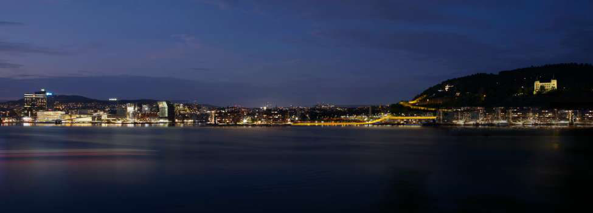

Pedestrian bridge, 2022. With Mikkel Wennesland, a volunteer proposal for the municipality of Oslo, Norway: a bridge connecting the waterfront Havne Promenaden to Ekeberg hill.

A bridge to connect the waterfront Havne Promenaden to Ekeberg hill.
Volunteer proposal for the municipality of Oslo, with Mikkel Wennesland.
Ekeberg Til Byen is a volunteer proposal, designed with Mikkel Wennesland, for the municipality of Oslo, Norway.
The bridge connects the waterfront Havne Promenaden to Ekeberg hill.